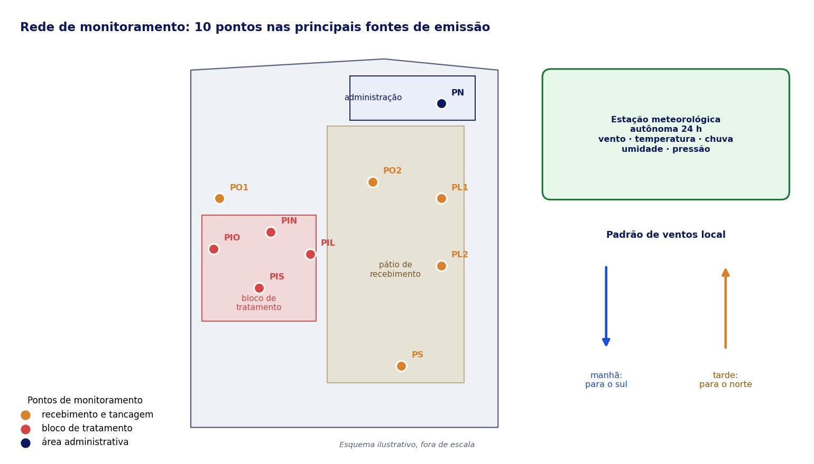
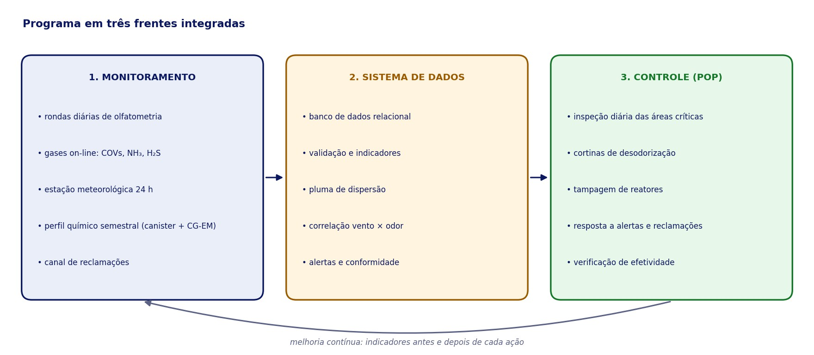
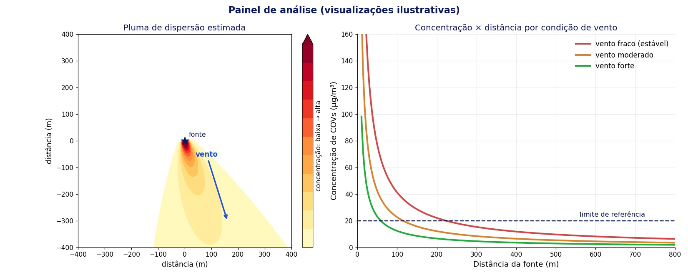
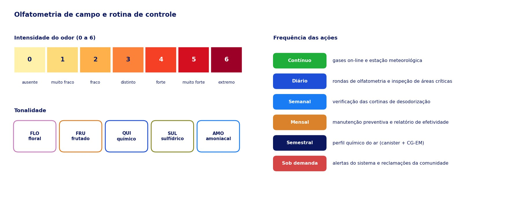
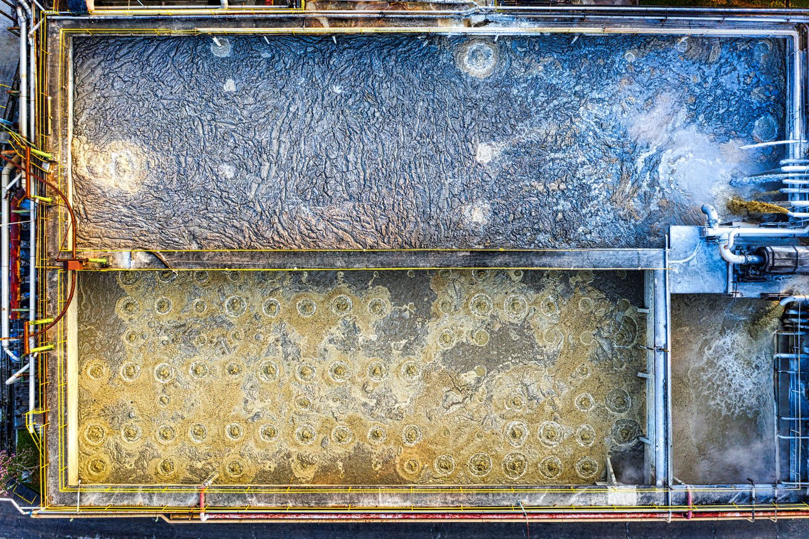
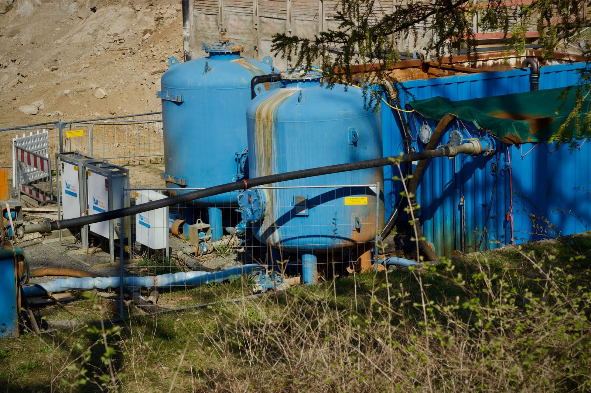

Problema / desafio do cliente
O tratamento de efluentes não domésticos gera emissões de gases odoríferos nas áreas de tancagem, no recebimento de efluentes e nos blocos de tratamento. Essas emissões são transientes, difusas e não confinadas (emissões fugitivas), variam com a operação e com o vento, e podem causar incômodo à vizinhança e risco à saúde dos trabalhadores.
Sem um sistema estruturado, as reclamações chegam sem que se saiba qual fonte, em que momento e em que condição de vento provocou o odor. O objetivo foi criar um programa completo de monitoramento, análise e controle para garantir a conformidade ambiental e a boa relação com a comunidade.
Contexto e características do processo
- Central de tratamento de efluentes não domésticos na Região Metropolitana de São Paulo, em área urbanizada.
- A dinâmica dos ventos no local é influenciada por rios próximos e pela configuração urbana: ventos para o sul pela manhã e para o norte à tarde, com correntes do setor leste que levam as massas de ar para noroeste e sudoeste conforme o horário.
- O programa envolve três equipes: meio ambiente e qualidade, operação e tecnologia da informação, com responsabilidades definidas.

Diagnóstico e dados analisados
- Fontes múltiplas e difusas: recebimento de efluentes, tanques e reatores do bloco de tratamento.
- Compostos de diferentes famílias químicas: sulfurosos (H₂S, mercaptanas), amoniacais, ácidos, aldeídos e cetonas e aromáticos.
- A percepção do odor depende da intensidade, da tonalidade e da direção do vento: um mesmo vazamento pode ou não chegar à vizinhança.
- Faltava integrar dados de sensores, meteorologia, percepção em campo e reclamações em um único lugar.
Metodologia utilizada
O programa foi organizado em três frentes integradas, com um ciclo de melhoria contínua:

- Plano de monitoramento: rondas diárias de olfatometria de campo, medição on-line de COVs, NH₃ e H₂S em 10 pontos georreferenciados, estação meteorológica autônoma e amostragem semestral por canister com cromatografia gasosa e espectrometria de massas.
- Sistema de integração e análise: banco de dados relacional, rotinas de validação e indicadores e um painel georreferenciado.
- Procedimento operacional padrão (POP): inspeções, operação das cortinas de desodorização, tampagem de reatores e resposta a alertas e reclamações.
Solução de engenharia desenvolvida
O sistema de dados reúne em uma só interface os sensores em tempo real, a meteorologia, as rondas de percepção, as análises de laboratório e as reclamações. Com isso, estima o comportamento da pluma de dispersão e responde perguntas práticas: em que direção o odor está indo, até que distância passa do limite e em quais condições de vento a pluma atinge a vizinhança.

O sistema calcula automaticamente:
- concentrações médias, máximas e mínimas por hora, dia, semana e mês;
- tendências temporais e correlação vento × odor × reclamações;
- índice de conformidade ambiental (tempo dentro dos limites de referência);
- alertas automáticos quando um limite crítico é ultrapassado, com calendário de conformidade e relatórios automáticos.
Tecnologias e processos envolvidos
- Sensores on-line de COVs, NH₃ e H₂S com transmissão por GSM.
- Estação meteorológica autônoma: vento, temperatura, chuva, umidade e pressão.
- Olfatometria de campo: intensidade (escala de 0 a 6) e tonalidade (floral, frutado, químico, sulfídrico, amoniacal).
- Amostragem por canister e análise por cromatografia gasosa acoplada à espectrometria de massas.
- Banco de dados relacional, rotinas de análise e painel interativo georreferenciado.

Modelagem, simulação e ferramentas computacionais
Modelos, simulações e ferramentas usados (balanços, CFD, Python, MATLAB, redes neurais, DMD, dashboards…) e o que cada um permitiu avaliar ou decidir.
Resultados obtidos
- Rastreabilidade completa das fontes e dos dados, com integridade e backup garantidos pela equipe de TI.
- Correlação objetiva entre fontes de emissão, condições meteorológicas e percepção da comunidade.
- Resposta rápida: diante de um alerta ou reclamação, a equipe consulta o painel, inspeciona as áreas críticas e registra as ações corretivas.
- Verificação de efetividade: indicadores antes e depois de cada ação (concentrações, reclamações e percepção em campo), com relatório mensal.
- Transparência e comunicação facilitada com órgãos ambientais, gestores e comunidade.
CAPEX/OPEX e análise técnico-econômica
Quando aplicável: estimativas de CAPEX e OPEX, comparação entre alternativas, custo por m³ ou por tonelada, payback.
Escopo e responsabilidades da GETA
A GETA foi responsável, na supervisão técnica da central de tratamento, por:
- concepção do programa e definição das responsabilidades das equipes;
- plano de monitoramento e desenho da rede de pontos;
- especificação do sistema de integração de dados e do painel;
- procedimento operacional padrão de controle de emissões;
- critérios de verificação de efetividade e melhoria contínua.
Principais entregáveis
- Programa de monitoramento e controle de emissões odoríferas.
- Plano de monitoramento de gases e condições meteorológicas.
- Sistema de integração e análise com painel georreferenciado.
- Procedimento operacional padrão (POP) de controle de emissões.
- Modelos de checklist diário, relatório mensal e registro de reclamações.
Galeria

